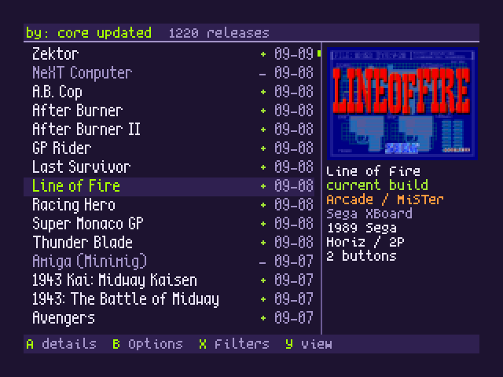
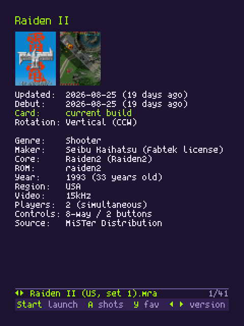
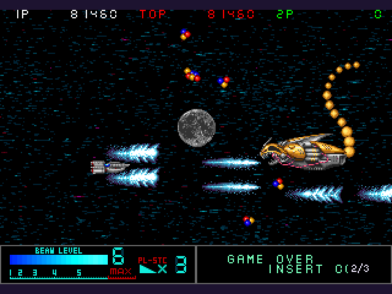
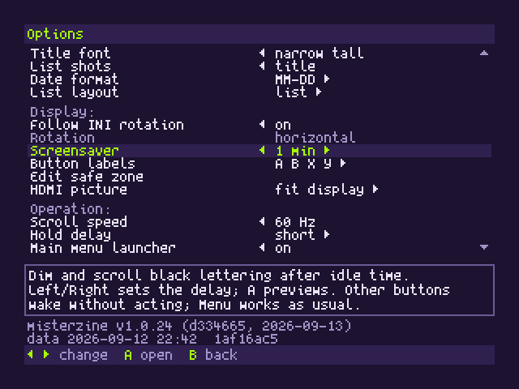
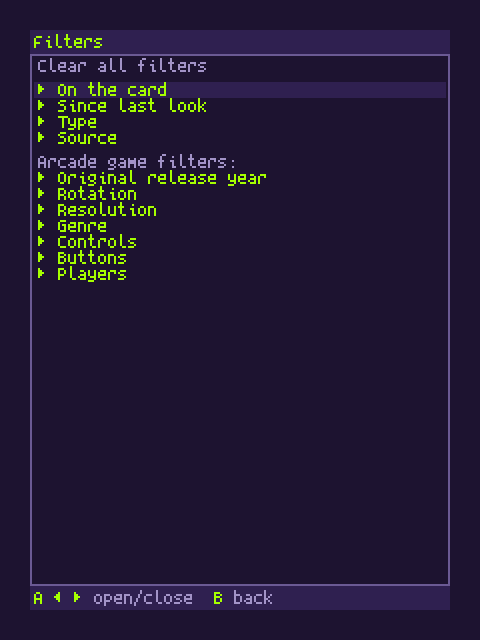

MisterZine Frontend is the release tracker running on the MiSTer itself. Open it from the main menu and see the same rows in the same order: what shipped today, what is new since your last look, and which of it is already on your card. Pick a game and launch it from there.
What it does
- Same tracker, same order. Every public core and arcade game, sorted by latest update or MiSTer debut, with the "your last look" divider so the new rows are obvious.
- Knows your card. Each row is marked current, older build, or not found on card, with a filter for "only what I have".
- Launches. One press starts the game or loads the core. Arcade alternates are a version picker away.
- Screenshots and specs. Title, in-game and snap shots, full-screen artwork, rotation, players, controls, genre, year, manufacturer.
- Favorites, filters, search. Star anything, filter by type, source, genre, rotation or card status, and type a title on a keyboard to find it. Filters are remembered.
- Update All, supervised. Run it from inside the app with live output, then see what the run caught you up on.
Built for the screen it runs on
- 240p native. A 320x240 framebuffer with a narrow bitmap font, drawn for 15 kHz CRTs first. HDMI gets the same picture, integer-scaled.
- Horizontal and tate. Rotated monitors get their own portrait layout, not a rotated copy.
- Adjustable safe zone. Move the edges in until every tube shows everything.
- Gamepad or keyboard. The pad you already use for the MiSTer menu drives it.
- Works offline. The catalogue and pictures are cached on the card and refreshed from misterzine.fyi on launch and every thirty minutes when a connection is there.
- Idle screensaver that dims the picture and keeps the tube safe.



Install
One file on your SD card, then Update All: the app installs and keeps itself updated through Downloader like any core. A one-time Setup script adds it to the main menu. The steps, the controls and the troubleshooting notes live in the README on GitHub, which is the manual. It needs a current MiSTer system with Downloader and the framebuffer console left on (the default). Choose HDMI or CRT for the app's own picture; games keep their own settings.
Bugs and questions
Open an issue on GitHub or post in the MisterZine thread on the MiSTer Discord.
Want to launch from your phone or PC instead? The tracker's own Launch button does that through wizzo's Remote on your network or through Zaparoo Online. The Frontend is for when you are already at the MiSTer.